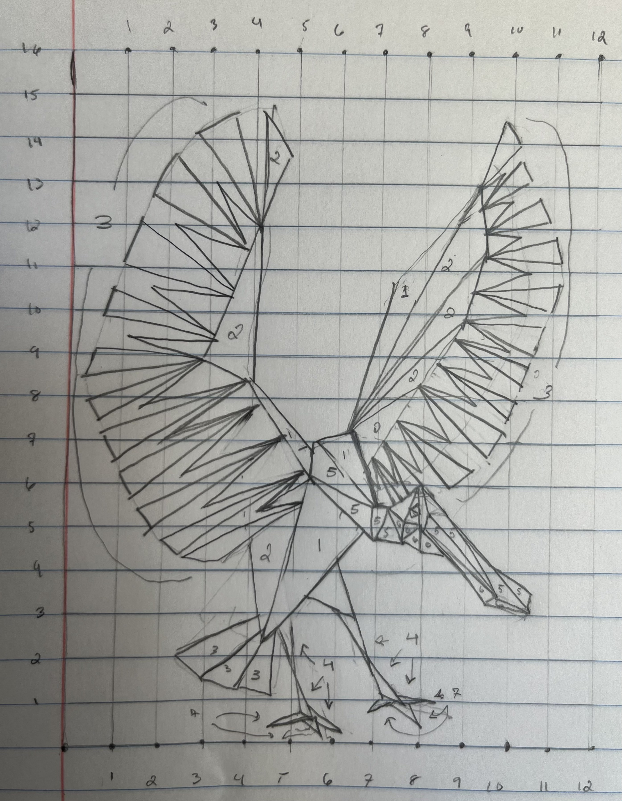

Drawing Mode:
I want to:
Shape Color:
Red:
Green:
Blue:
Shape Size:
(Circles) Segment Count:
For my drawing, I found an image of a Roseate Spoonbill spreading its wings. I liked the motion and composition of the pose.
I drew the bird on a piece of graph paper, gave it cooridinates, and transferred the vertices into triangles that I drew in the program.
You can press the button titled "DRAW A BIRD" see the bird. This is my "drawing".
As much as I like drawing, I like video games more. I'm not really good at them, but I'm trying to get better, so I added an aim trainer program.
To play the aim trainer, press the "TRAIN MY AIM" button. This is my "awesomeness" feature.
The aim trainer spawns 3 targets at a time, that get removed when you click on them.
I painted a "hand"gun that follows your mouse, a crosshair to show where you are aiming, and a VERY REALISTIC muzzle flash to make the whole experiene more immersive.